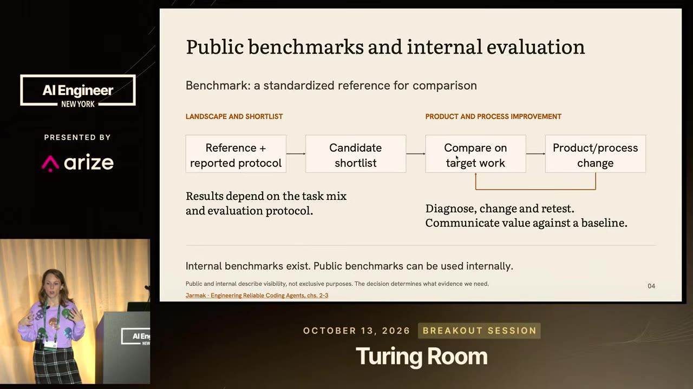
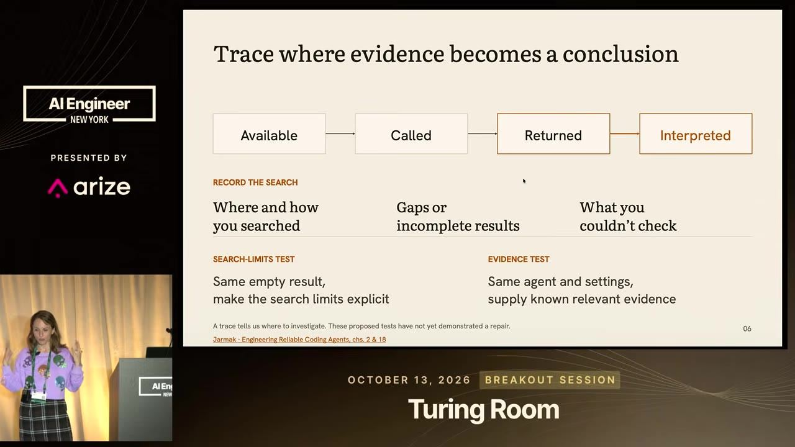
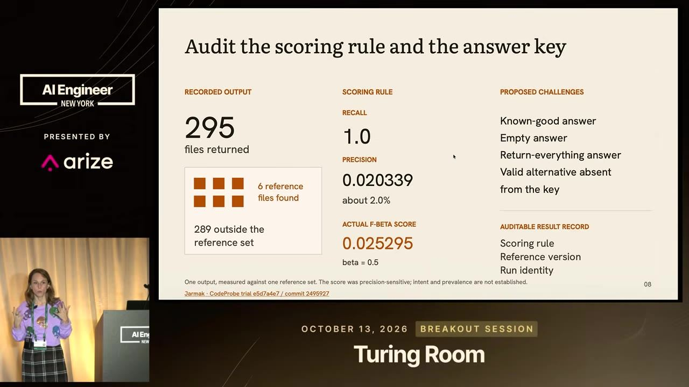
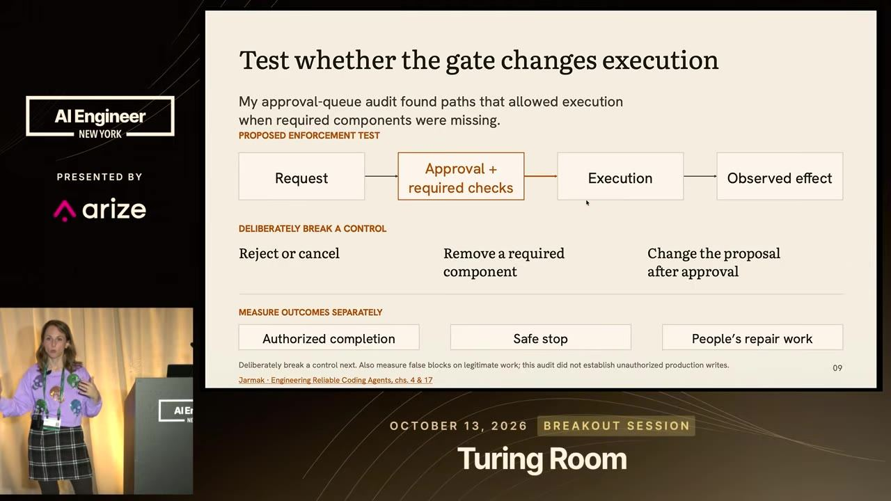

essencial do dia: Trocar só o harness mudou o resultado em mais de 30%, e você aprende a desenhar evals de agente como experimento.
Testar agentes como cientista, com evals próprios
Don't Trust Your AI Agents. Test Them Like a Scientist
Resultado de eval de agente engana fácil. Teste como cientista: tarefas reais, várias execuções, traces completos e a métrica certa.
Depois deste talk você consegue montar um eval pequeno com tarefas reais, várias execuções e traces, e escolher a métrica certa antes de aceitar um benchmark público
Em 3 frases
Stephanie Jarmak mostra que trocar só o harness (a estrutura que roda o modelo) mudou o resultado em mais de 30%, então benchmark público serve para montar uma lista curta e não para decidir.
Ela propõe desenhar evals como experimento: cobrir os tipos de tarefa, repetir as execuções, guardar todos os traces e medir o que importa para o seu negócio.
Alertar não basta, o gate precisa bloquear o trabalho, a revisão humana tem limite de capacidade, o registro do agente pode mentir e só a produção dá a resposta final.
Antes de ler
- Harness estrutura que roda o agente analogia no glossário
- Benchmark teste padronizado de desempenho analogia no glossário
- Eval avaliação analogia no glossário
- Trace registro estruturado da execução analogia no glossário
- Precision e recall precisão e cobertura de um classificador analogia no glossário
- Quality gate barreira de qualidade analogia no glossário
O harness muda o vencedor
Em uma comparação de terceiros com cerca de 63 tarefas no Terminal Bench, um modelo ganhou com o harness Open Hands. Ao trocar só o harness, o outro modelo ficou muito melhor, uma diferença de mais de 30%. Avalie a configuração mais próxima da que você vai usar.
 (ampliar imagem)
(ampliar imagem)
Benchmark público é para lista curta
Benchmark público ajuda a entender o cenário e escolher candidatos. A decisão sai de um eval seu, feito com tarefas parecidas com o seu trabalho. Um escritório de advocacia ganha pouco olhando resultado de benchmark de código.


(ampliar imagem)Rastreie o pipeline inteiro
Quando o agente ignorou a ferramenta, ela só podia ser diagnosticada olhando cada etapa: a ferramenta estava disponível, foi chamada, o que retornou, o resultado mudou? Consertar o uso da ferramenta pode não mexer no resultado final da tarefa.


(ampliar imagem)Mais 2 ideias deste talk
Meça o que você quer otimizar
Na busca com grep, o agente trouxe 295 arquivos quando só precisava de 6. Recall perfeito esconde a falta de precisão. Ela usou F1, que equilibra precisão e recall, porque o objetivo era outro. Pergunte o que o validador de um benchmark realmente mede.


(ampliar imagem)Gate que bloqueia, alarme que cabe no humano
O agente percebeu o problema, mas nada o impedia de continuar. Sinalizar e bloquear são mecanismos separados no código. Um juiz LLM com 1% de falsos alarmes geraria 10.000 revisões humanas, e poucas equipes têm especialistas para isso.


(ampliar imagem)O talk é curto e mistura vários temas em poucos minutos. Os exemplos vêm de fontes de terceiros ou de projetos da própria palestrante, sem dados abertos, amostra ou método detalhado. O resultado de 30% do harness é de uma comparação com cerca de 63 tarefas, amostra pequena. Há leve divulgação do repositório de skills e do arquivo de 300 páginas dela, sem evidência de que funcionem.
Teste você mesmo
Responda de cabeça antes de abrir. Lembrar com esforço é o que fixa.
- lembrar O que aconteceu na comparação do Terminal Bench quando só o harness foi trocado?
Ver resposta
Em uma comparação de terceiros com cerca de 63 tarefas, um modelo ganhou com o harness Open Hands. Ao trocar só o harness, o outro modelo ficou mais de 30% melhor.
- aplicar Como você montaria um eval para o seu agente?
Ver resposta
Monte um conjunto pequeno de tarefas reais agrupadas por tipo, rode cada uma várias vezes para ver a variação, guarde os traces e teste modelo e harness juntos, na configuração que vai usar.
- criticar Por que a diferença de 30% do harness não é prova definitiva?
Ver resposta
Vem de uma comparação de terceiros com cerca de 63 tarefas, amostra pequena. O talk mistura vários temas em poucos minutos, usa exemplos sem dados abertos ou método detalhado e divulga o repositório dela sem evidência de que funcione.
Eval de cinco tarefas rodadas três vezes
Você precisa de: Claude Code ou Python com uma API de LLM, e cinco tarefas reais suas
- Escreva cinco tarefas reais do seu trabalho e o critério de acerto de cada uma.
- Rode cada tarefa três vezes e salve a saída completa.
- Marque acerto ou erro de cada rodada em uma planilha.
- Nos erros, leia o trace e anote em qual etapa a falha ocorreu.
Deu certo se: Você tem a taxa de acerto por tarefa e viu se a mesma tarefa varia entre rodadas.
O que fazer com isso
- Teste modelo e harness juntos, na configuração que você vai usar, antes de aceitar o ranking de um benchmark público.
- Monte um conjunto pequeno de tarefas reais do seu trabalho, agrupadas por tipo, e rode cada uma várias vezes para ver a variação.
- Guarde os traces e, quando o agente ignorar uma ferramenta, cheque etapa por etapa: disponível, chamada, retorno, resultado.
- Faça o gate bloquear de verdade no código e estime quantas revisões humanas o seu alarme geraria antes de ligá-lo.
Conversa com outros talks
- Ler traces antes de escrever evals · 5 out · em comum: Eval, LLM-as-a-judge, Precision e recall
- Evals com gate de CI para agentes de alto risco · 18 out · em comum: Eval, LLM-as-a-judge, Quality gate
- Do trace ao CI: evals para um agente · 17 out · em comum: LLM-as-a-judge, Precision e recall, Trace